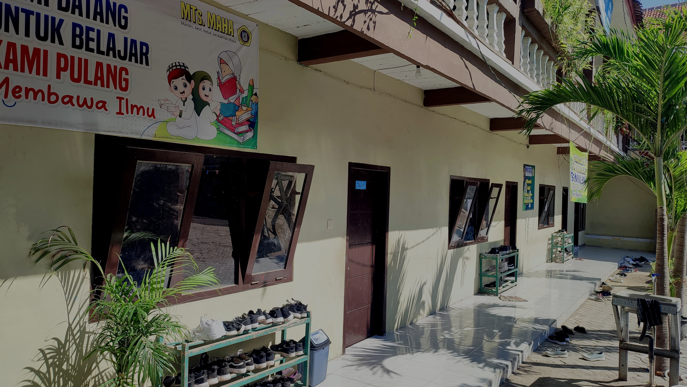

Selamat Datang di MTs Mambaul Hasan
Mengembangkan potensi siswa melalui pendidikan Islami yang berkualitas dan berkarakter.
Pelajari Lebih Lanjut

Mengembangkan potensi siswa melalui pendidikan Islami yang berkualitas dan berkarakter.
Pelajari Lebih Lanjut
Assalamu'alaikum warahmatullahi wabarakatuh.
Selamat datang di website resmi MTs Mambaul Hasan. Sebagai lembaga pendidikan berbasis Islami, kami berkomitmen untuk memberikan pendidikan berkualitas yang berlandaskan pada nilai-nilai keislaman. Kami berharap dengan adanya website ini, informasi mengenai sekolah kami dapat diakses dengan lebih mudah oleh masyarakat.
Wassalamu'alaikum warahmatullahi wabarakatuh.
Program pendidikan yang komprehensif dan Islami, menggabungkan pengetahuan umum dan agama.
Fasilitas yang mendukung kegiatan belajar mengajar, termasuk masjid dan ruang ibadah.
Kegiatan ekstrakurikuler yang menguatkan karakter Islami siswa, seperti tahfidz dan kajian Islam.
Berikut adalah beberapa dokumentasi kegiatan di MTs Mambaul Hasan